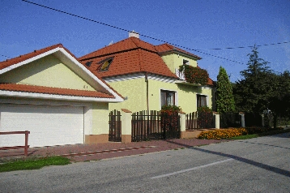
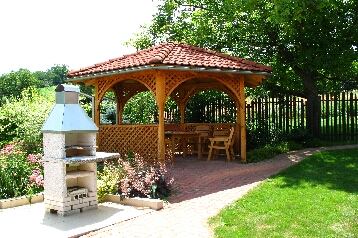
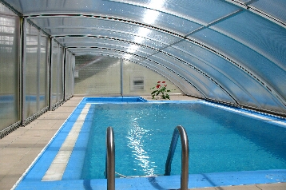

Na juhu Slovenska, v nitrianskom kraji, v okrese Nové Zámky, sa nachádza malebná dedinka s netradičným názvom: Čechy. Hoci má len tri stovky obyvateľov, je bohatá svojou históriou a krásnou okolitou prírodou, ktorú ocení každý návštevník. Je súčasťou regiónu Termal, pretože priamo susedí s obcou Podhájska, v ktorej sa nachádza významné termálne kúpalisko jedinečné tým, že má rovnaké zloženie ako morská voda, vďaka čomu ho počas celého roka denne navštevuje tisíce ľudí zo všetkých kútov Slovenska i zo zahraničia.
|    |